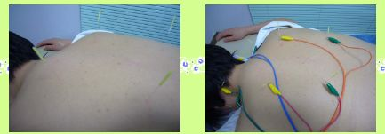

当院ではディスポーザブル（使い捨て）の鍼を使用しており、衛生管理・消毒などの徹底を 心掛けておりますので、感染症などの心配はありません。また、鍼の太さは毛髪程度で、注射針の ような痛みを感じる事はほとんどありません。どうしても鍼に抵抗がある方には無理強いしたりする事はしませんので、 安心してご来院下さい。当院で行なう鍼治療は、身体の表面、主に経穴（ツボ）にあたる部位や反応点 （特定の筋や腱・痛みの強い部位）に鍼を刺入し刺激を与えたり、鍼に低周波（パルス）を流す方法があります。 それぞれ刺激量が変わってきますので、症状等によって使い分けて治療を行なっていきます。
